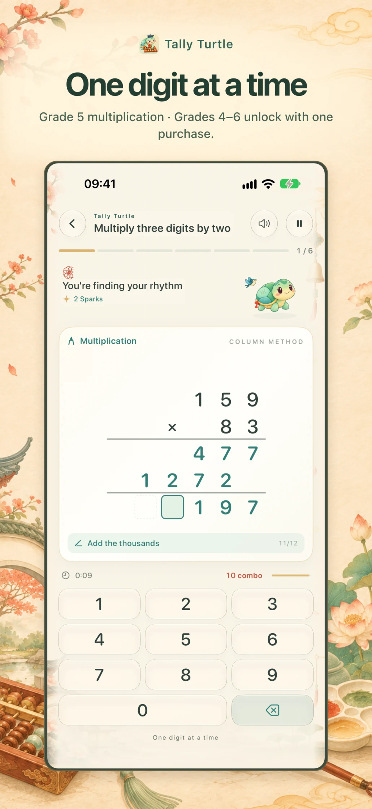
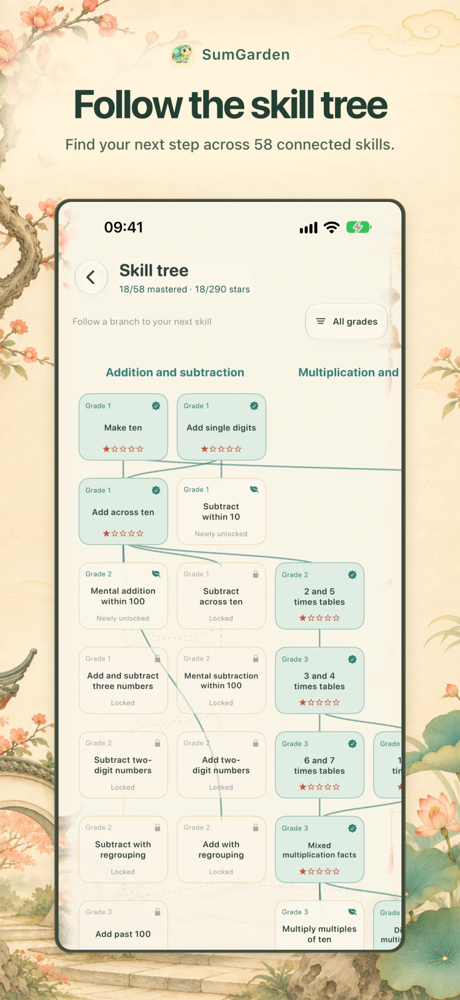
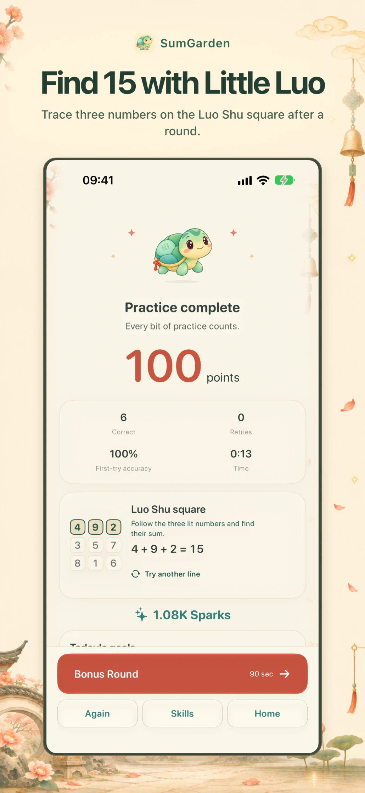
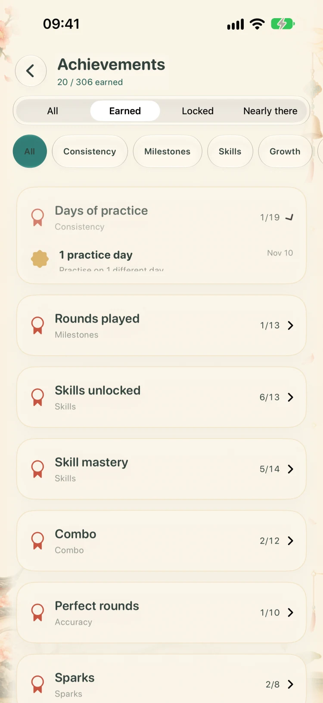
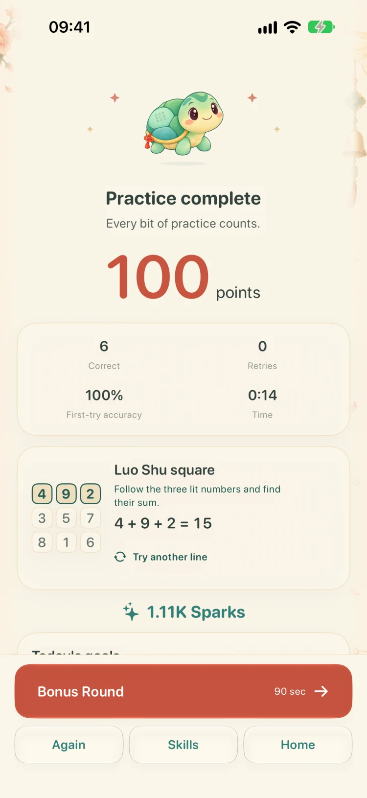
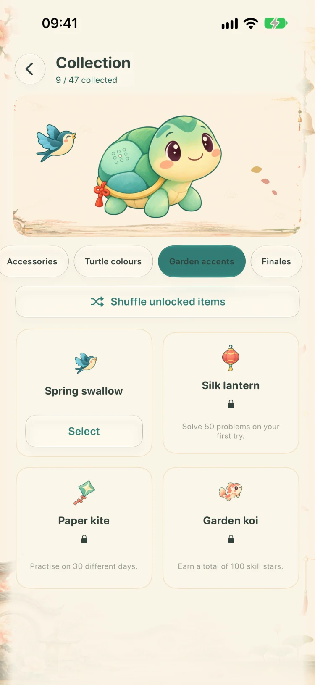
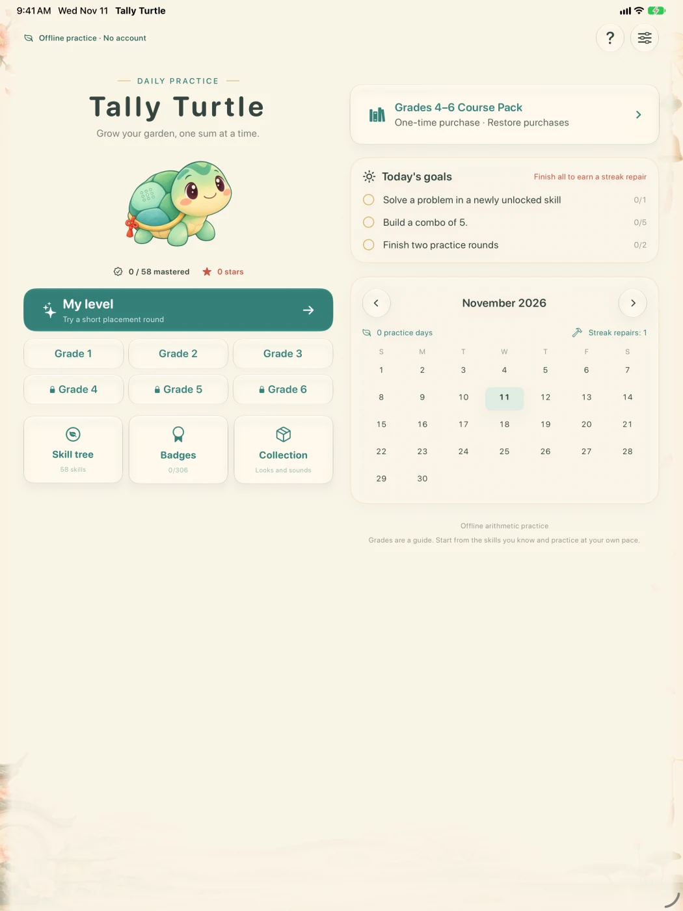

Arithmetic,
one digit at a time.
Practice sums, fractions and ratios with Tally, a young Luo River turtle. Questions are generated on your device, with a prompt for the digit in front of you.

Work through a column sum
Start addition and subtraction at the ones. Follow the carry or regrouping mark. If you miss a digit, try that box again while your correct digits stay in place.
159 × 83
Multiply by the 3 ones, then the 8 tens. Add the two aligned partial products. The outline shows which digit to enter next.


Find your next skill
Lines on the skill tree connect each topic to its prerequisites. Open a node to see what you know and what to practice first.


Discover 15 with Tally
Tally draws on the traditional Luo River turtle story. After a round, tap Try another line to explore the Luo Shu square. Every row, column and diagonal adds to 15.


Explore round results and achievements


Review achievements earned through practice, skill and speed.


Check the score, time and progress for this round.
Hear your combo grow
Petals appear as you enter digits, and the music builds with your combo. Preview kites, koi, swallows and lanterns in the collection. Earn achievements to equip your favorites.
Tally Turtle created Tally, the garden artwork and the practice feedback. Sound, motion and haptics have separate controls in Settings.

Fold the screen. Keep your place.
When iPhone Duo is folded, the right sidebar holds pause, progress and hints. Unfold it to give the worksheet and keypad more room. Your digits stay with the problem.


Choose a starting grade
The 58 skills build on one another. Suggested grades help you pick a starting point. Schools and countries may teach the topics in a different order.
- Grades 1–3
- Free · 28 foundational skills
- Grades 4–6
- US$2.99 · One purchase for 30 upper-grade skills
On the home screen, tap Grades 4–6 Course Pack. Complete the parent check and tap Enter Parent Area to see the local price, unlock the pack or restore a purchase.
After purchase or restore, the home screen shows Full Edition and opens all six grades.
Purchase and restore help
